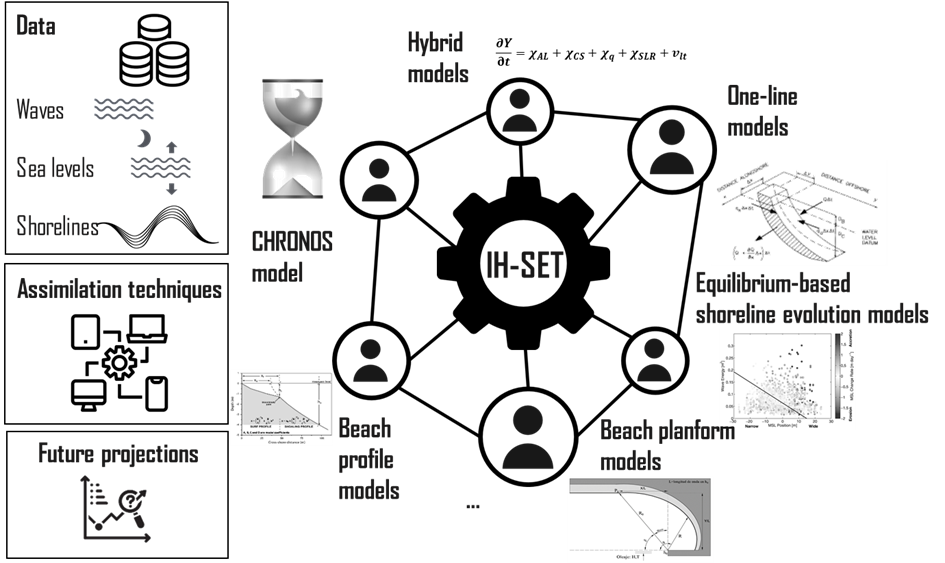
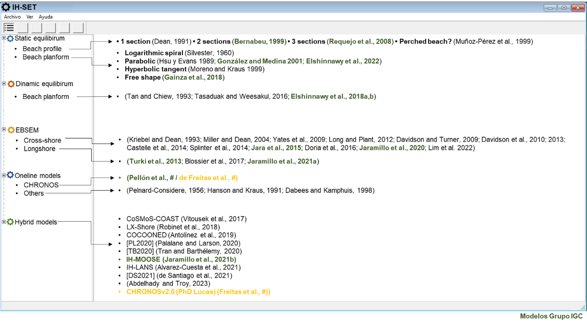

IH-SET Manual
Motivation
Coastal zones are dynamic environments, conditioned by diverse agents such as waves, winds, currents, sea level, anthropogenic modifications, and other oceanographic and sediment supply factors at different spatio-temporal scales. Therefore, coastal engineering studies or projects vary in nature and complexity. Depending on the scope and objective of each project, managers and actors in the coastal field rely on beach morphodynamic models as useful tools that allow them to estimate the future position of the coastline, plan and make decisions regarding the protection of infrastructure, and evaluate services and habitats on the coast.
In general terms, coastal morphodynamic models can be separated into different classifications according to the criteria chosen; nature, accuracy, scales of application, and main direction of the processes involved, among others. For example, depending on the temporal scale of application, there are short (hours-days), medium (days-years), and long-term (years-decades) models. Depending on the spatial scale, micro (tens of meters), meso (hundreds of meters), and macro (kilometers) models can be distinguished.
Despite the advances made by researchers in recent years, there is still no model capable of analyzing and predicting the evolutional processes of the coast at different spatial and temporal scales simultaneously. Instead, depending on the nature of the project under study, there is a wide range of models available, each focusing on a complex problem from a specific point of view.
In the case of short diagnoses or studies, coastal engineers resort to simplified tools such as empirical formulations to define the static and dynamic equilibrium conditions, or heuristic models of shoreline position evolution, which are extremely useful in quickly inferring morphodynamic processes. On the other hand, in the case of more detailed studies, more robust models that integrate or combine processes are usually used to achieve a more realistic projection of the future condition of the coast. As for the latter, there are 3D models applicable to only the short-term due to their computational cost or quasi-3D models, also known as hybrids, which assume a series of simplifying hypotheses, in order to predict the changes in the coastline for the medium and long-term.
Existing hybrid models make several assumptions, including wave propagation by linear wave theory (Snell’s law), the simplification of a theoretical beach profile, and the consideration that all model calibration parameters remain constant during the forecast simulation. The most impactful of these assumptions, however, is that they do not conserve the overall sediment balance. Instead, these models apply sediment conservation in the longshore transport modulus, but not in the integration of movement due to cross-shore transport. This limitation does not allow a reliable prediction of the future evolution of the coast, which results in significant uncertainties.
The Coastal Engineering and Management Group (IGC) of IHCantabria has devoted years of research focused on the development of new model proposals, trying to address both simplified predictions for diagnostic studies, as well as complex process-based models for more detailed studies. Between this and the above descriptions, there are two needs that must be addressed:
The need to develop a system that unifies the morphodynamic models of coastline, some of which have been developed by the IGC Group, allowing the user to choose the best methodology according to the scope and objectives of their project, executing this in an agile way. Currently, there is no system with these characteristics. The development of this type of tool would facilitate model application in the most diverse fields of coastal engineering, especially considering that to date, these are scattered in different code formats and available mainly to the academic community.
The need to devote more research efforts to the development of a shoreline evolution model integrating cross-shore and longshore processes, guaranteeing sediment conservation. This model is intended to be applicable to the medium, long, and very long term, in order to provide more robust, reliable, and realistic predictions of changes It will also efficiently allow quantification of the uncertainties associated with these predictions.
Both needs are linked to the IGC Group to form a network of coastal engineering scientists specializing in beach morphodynamics, with the common goal of developing shoreline evolution models. This network seeks interdisciplinary expertise to improve the understanding of the integrated evolution of shoreline movements, taking into account the impacts of climate change, and providing a portfolio of validated tools to predict future beach changes.
Outline
This project aims, on the one hand, to develop the IH-Shoreline Evolution Tool (IH-SET) to unify various morphodynamic models, allowing efficient forecasting of future coastline changes according to the scope and purpose of the project required by the user. On the other hand, a new model of coastline evolution will be developed by integrating transverse and longitudinal sediment transport processes, which will preserve sediment balance.
This document outlines succinct technical descriptions of the chosen models, which will be seamlessly integrated into the Shoreline Evolution Tools (IH-SET). These modular tools empower engineers and coastal managers to investigate morphodynamic studies across diverse spatial and temporal ranges, whether it be within a project or while assessing a beach as a physiographic entity.
A schematic infographic is presented in Fig. 1-1, offering an overview of the IH-SET’s general structure.
 Fig. 1-1. The general structure of the IH-SET.
To ensure a unified and comprehensive understanding, each model comes with concise metadata descriptions. The following figure shows a preliminary list of the models to be included in the IH-SET. The tool will start with the models highlighted in green, which correspond to the expressions developed by the Coastal Management and Engineering Group of IHCantabria.
 Fig. 1-2. The general structure of the IH-SET.
Contents
User manual
Model formulation
Examples
Installation
Bibliography
Davidson, M. A., Splinter, K. D., Turner, I. L., 2013. A simple equilibrium model for predicting shoreline change, Coast. Eng., 73, 191–202. https://doi.org/10.1016/j.coastaleng.2012.11.002
Dean, R., 1991. Equilibrium beach profiles: characteristics and applications. J. Coast. Res. 7, 53–84. https://www.jstor.org/stable/4297805
González, M., Medina, R., 2001. On the application of static equilibrium bay formulations to natural and man-made beaches. Coast. Eng. 43, 209–225. https://doi.org/10.1016/S0378-3839(01)00014-X
Hsu, J.R.C., Evans, C., 1989. Parabolic Bay Shapes and Applications. Proc. Inst. Civ. Eng. 87, 557–570. https://doi.org/10.1680/iicep.1989.3778
Jara, M.S., González, M., Medina, R., 2015. Shoreline evolution model from a dynamic equilibrium beach profile. Coast. Eng. 99, 1–14. https://doi.org/10.1016/j.coastaleng.2015.02.006
Jaramillo, C., González, M., Medina, R., Turki, I., 2021a. An equilibrium-based shoreline rotation model. Coast. Eng. 163, 103789. https://doi.org/10.1016/j.coastaleng.2020.103789
Jaramillo, C., Jara, M.S., González, M., Medina, R., 2021b. A shoreline evolution model for embayed beaches based on cross-shore, planform and rotation equilibrium models. Coast. Eng. 169, 103983. https://doi.org/10.1016/j.coastaleng.2021.103983
Jaramillo, C., Jara, M.S., González, M., Medina, R., 2020. A shoreline evolution model considering the temporal variability of the beach profile sediment volume (sediment gain / loss). Coast. Eng. 156, 103612. https://doi.org/10.1016/j.coastaleng.2019.103612
Lim, C., Kim, T. K., Lee, J. L., 2022. Evolution model of shoreline position on sandy, wave-dominated beaches. Geomorphology. 108409. https://doi.org/10.1016/j.geomorph.2022.108409.
Miller, J. K., Dean, R. G., 2004. A simple new shoreline change model. Coast. Eng. 51, 7, 531–556. https://doi.org/10.1016/j.coastaleng.2004.05.006.
Turki, I., Medina, R., Coco, G., Gonzalez, M., 2013. An equilibrium model to predict shoreline rotation of pocket beaches. Mar. Geol. 346, 220–232. http://dx.doi.org/10.1016/j.margeo.2013.08.002
Yates, M.L., Guza, R.T., O’Reilly, W.C., 2009. Equilibrium shoreline response: Observations and modeling. J. Geophys. Res. Ocean. 114, 1–16. https://doi.org/10.1029/2009JC005359